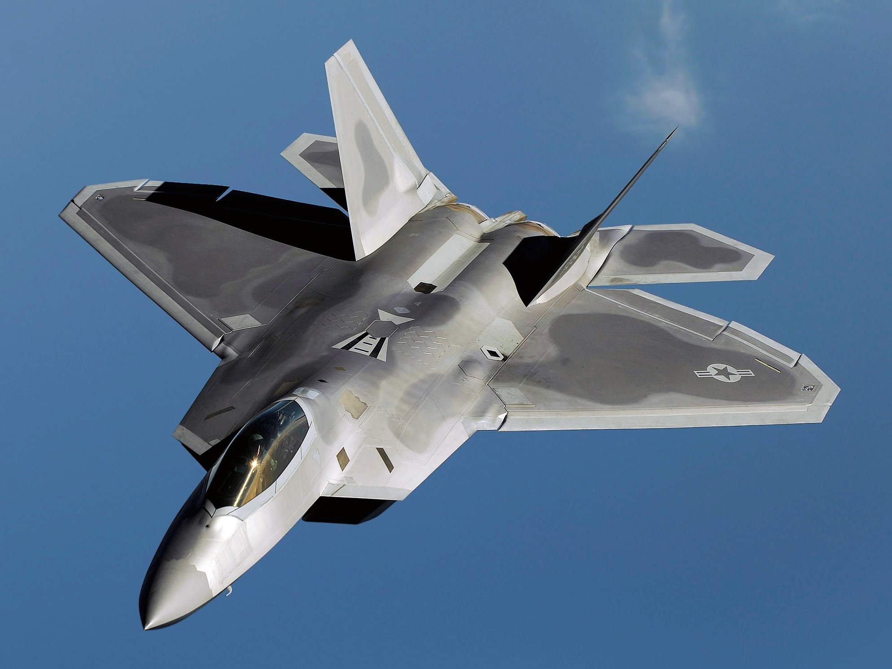

Caças Americanos
F-14
é um caça supersônico criado para suplantar o McDonnell Douglas F-4 Phantom II
B-2
B-2 Spirit é um bombardeiro estratégico furtivo dos Estados Unidos
F-22 Raptor
O Lockheed Martin F-22 Raptor, é um caça de dominação aérea fabricado nos Estados Unidos, pela Lockheed Martin. Foi o primeiro caça de quinta geração a entrar em serviço. Sua missão principal é manter a superioridade aérea no campo de batalha, mas também possui capacidade secundária de ataque ao solo.
